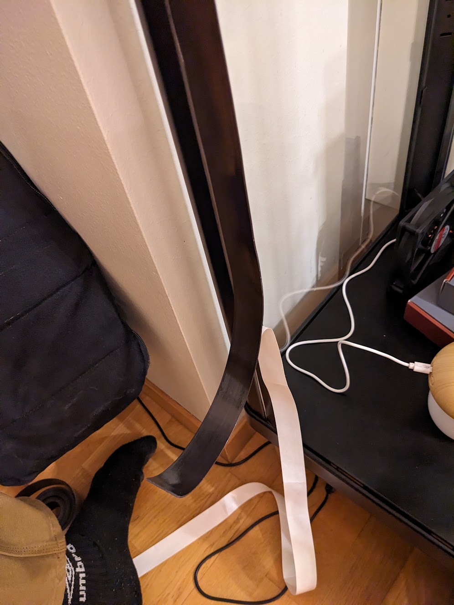

10. januar 2023 · innredning, planter
Hvorfor gjorde jeg det?
Ønsket å kombinere at plantene jeg har skal få det bedre og tilføre noe til interiøret i leiligheten. Fikk
innspirasjon av at mange andre har gjort noe som dette før. Det jeg kanskje likte best var at alle gjorde
det helt forskjellig, så sånn sett kunne jeg velge og bestemme helt selv hvordan det skulle bli.
Hvordan gjorde jeg det?
Jeg liker veldig godt å kjøpe ting brukt (spare penger og miljøet), så prosjektet kunne ikke helt starte
før jeg fikk et varsel på Finn som traff mine kriterier på hvordan skapet skal være. Det viktigste var at
skapet ikke skulle være større enn skapinteriøret på kjøkkenet.
Når jeg endelig fikk et varsel som traff kriteriet mitt, var det eneste negative at fargen var feil og at beina
stakk utenfor skapene. Dette ble enkelt endra med sprayboks og nye bordbein.
Jeg tenkte at det hadde passe bedre inn med et svart skap. Måtte først bruke sandpapir på det før jeg så tok et
lag med primer og deretter flere lag med svart maling. Jeg lærte på den tunge måten at sprayforholdene, spesielt
temperaturen i lufta, har en viktig innvirkning på det ferdige resultatet. Måtte derfor påføre flere lag, for å
sjule feilene mine.
Det neste problemet som skulle løses var å fikse/endre beinene på skapet. Dette ble gjort ved å kjøpe
bordbein på IKEA og 3D-printe et feste mellom beina og skapet. Denne utfordringen tok samboeren min (Peter)
seg fatt rundt og fant en god løsnig på det.

Deretter var det å fikse det tekniske i skapet. Koble til luftfukter, vokselysene og gjøre skapet tett
ved å bruke magnetisk teip.
For å feste vokselysene ble det også 3D-printa feste. Dette ble igjen gjort av Peter, hvor han kom på ideen
3D-printe en holder for vokselyset og så bruke magneter for å holde den oppe og dermed holde vokselyset på
plass.
Deretter begikk jeg med ut på å sage hylla som skal stå inni skapet. For å sage loddrett måtte det bli brukt
en sag (tykke stenger), mens for å kutte vertikalt ble det brukt en dremmel (mer presist og lettere). Denne
hylla skal ligge midt i skapet.
For å feste vifta i taket på skapet, ble det brukt samme teknikk som på tidligere fester. Forskjellen denne
gangen var at festene ble mye mindre og det skulle bli lagd et hull til en tråd som kan blir trekt igjennom
den og vifta. Dette ble utarbeidet fordi det er viktig at det er godt med lurft bak vifta.
Hylla ble satt på plass ved å bruke bambusrester fra badet, og bruke de som to lister som hylla kan ligge
over. Jeg syns fargen på skapet og bambusen passa godt i lag, og bambusen ga en god forskjell i møbelet. Det
ble en brytning av materialet og farge.
For å få litt orden inni skapet, fiksa Peter litt med kablene.